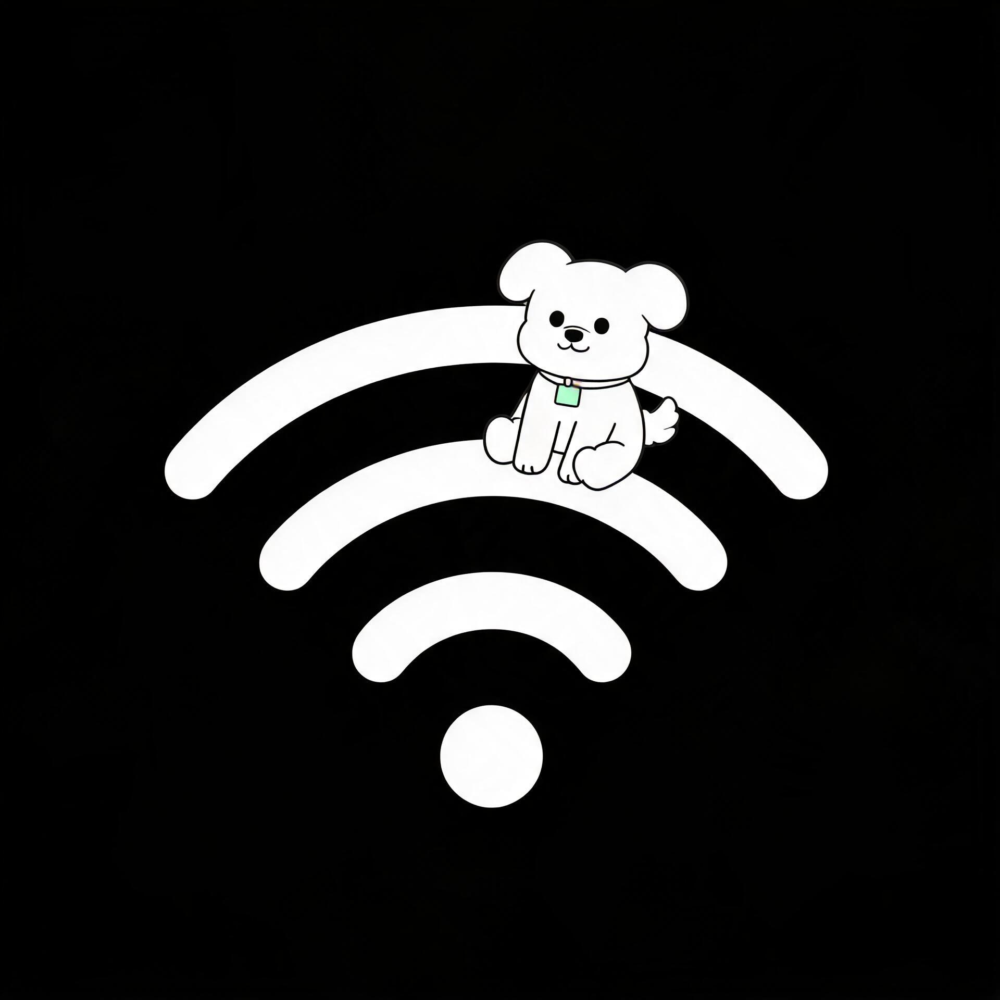
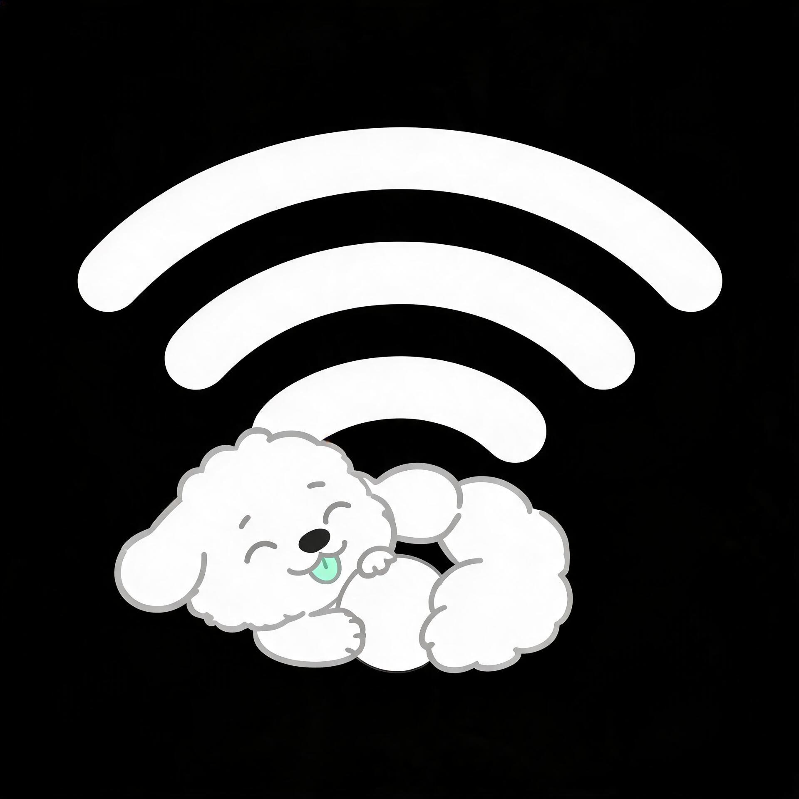
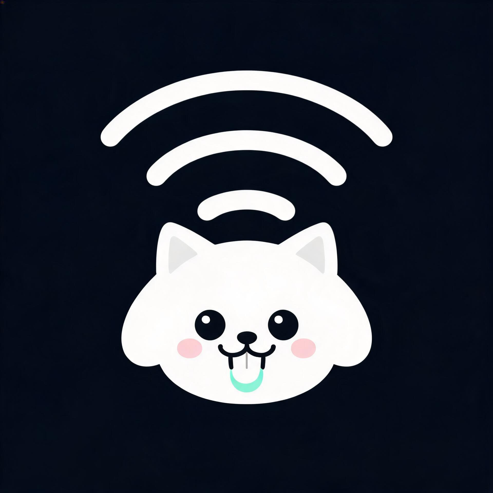
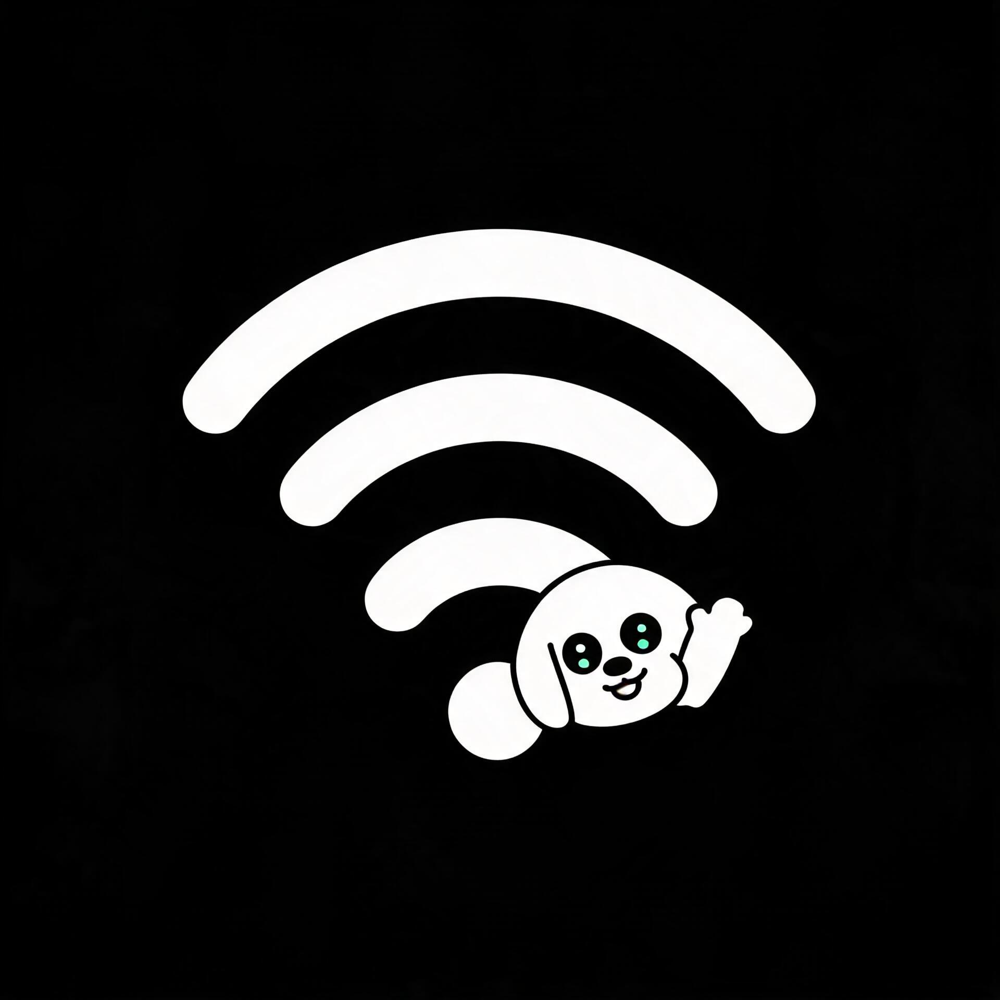

主图标
01
探头小狗
小狗趴在最外层弧线上方，只露半个头和两只爪子。Wi-Fi 完全没被打扰，识别度最高。
WIFI 完整度 · 100%

02
弧上小坐
小狗坐在中间那道弧上晃腿，三道弧与圆点全部保留，像把信号当成了长椅。
WIFI 完整度 · 100%

03
趴着连网
一只毛茸茸的小狗摊在最下方，三道弧完整悬在上方。软塌塌的造型最治愈。
WIFI 完整度 · 90%（圆点被遮）

04
弧下小狗头
三道弧当作光环，圆点位置换成一颗圆滚滚的狗头，吐着舌头。最「表情包」的一个。
WIFI 完整度 · 75%（圆点被替换）

05
侧边打招呼
小狗从弧线右下角探出来抬手打招呼，Wi-Fi 保持完整，适合做「已连接」类状态图标。
WIFI 完整度 · 100%